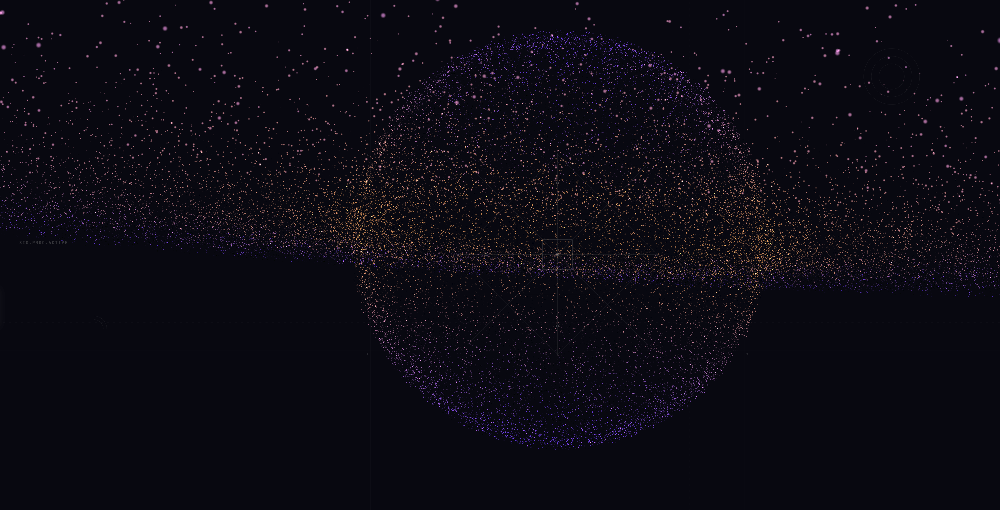
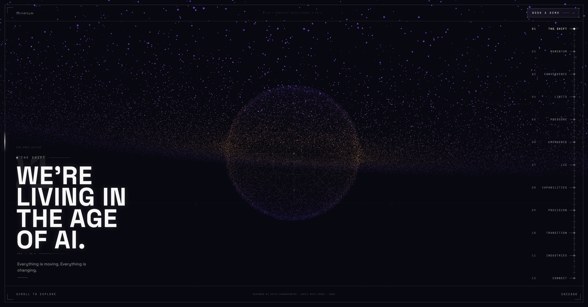
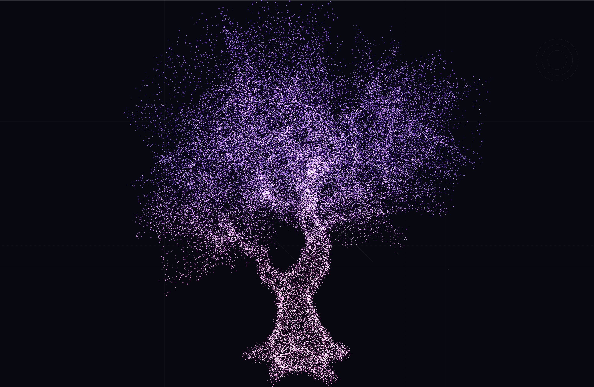
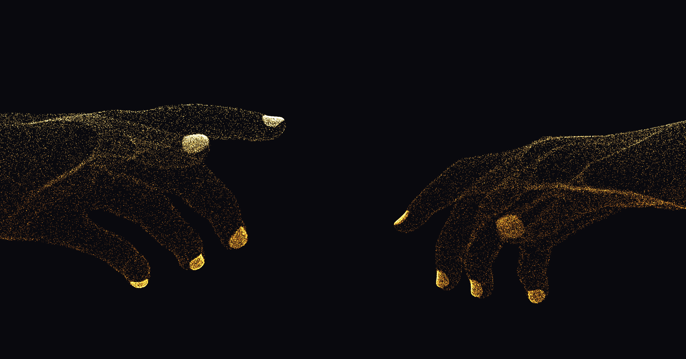

LIZ is Thinktum's AI-native insurance infrastructure suite — modular, interconnected, built for a future the industry hasn't caught up to yet. The design problem: how do you sell something people don't yet have a mental model for?

The globe isn't decorative. It's the insurance industry before LIZ — a self-contained world, heavy with legacy, orbiting nothing. 20,000 particles. One formation. The weight of an entire industry in a single shape.
Every other insurtech site used UI mockups and feature grids to explain a complex product. I went the other direction. Particles don't explain LIZ — they make you feel it. The morphing of shapes over time is the argument. By the time copy appears, you already believe something is happening.
The story had to earn every beat. Each particle formation needed to mean something before the text arrived to confirm it. The Big Bang metaphor unlocked this — the industry is the old universe, LIZ is a new law of physics. Once that was locked, every scene had a reason to exist.
The middle of the site was never meant to act like a product tour. It was meant to make the logic of the experience legible after the feeling had already landed. That is why these decisions matter more as narrative choices than as visual tricks.

This page works because the right rail is visible from the first second. It tells the user there is a structure, a sequence, and a destination. The HUD readouts and BOOK A DEMO do the same thing: they make the system feel active without interrupting the story. Nothing here asks for attention. It simply stays ready.

From scattered particles, a trunk forms. Then branches. Then a full canopy, breathing. The tree isn't a metaphor for growth — it's what happens when a system finds its natural shape. Pink structure particles define the scaffold. White world particles fill the space between.
The Big Bang is the governing metaphor. The insurance industry is the old universe — dense, slow, closed. LIZ is a new law of physics. The experience doesn't explain this. It demonstrates it, beat by beat, until the user arrives at the demo CTA having already lived the argument.

Michelangelo's Adam — but the hand reaching isn't God's. It's LIZ. The moment of contact is the moment the industry changes. Particles bridge the impossible distance between legacy infrastructure and what comes next. This is the beat before the demo CTA.